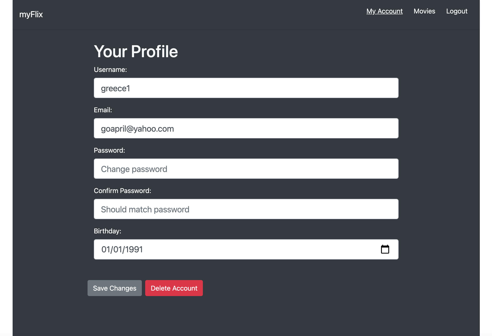
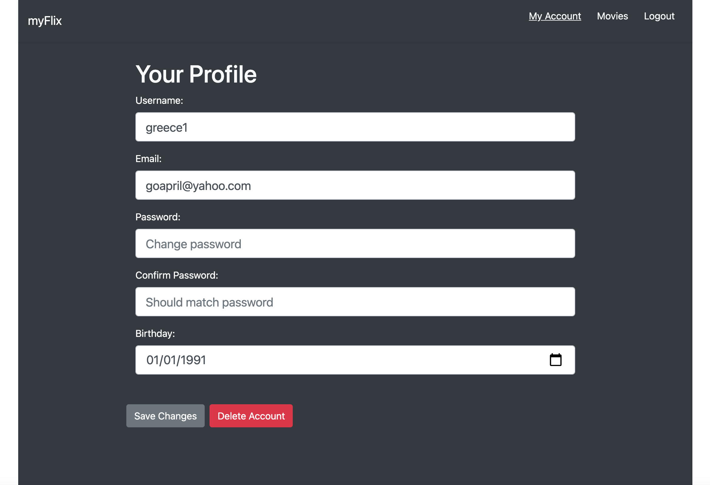

myFlix React Application
Case Study
Overview
myFlix is a web app, developed using the MERN stack, that allows users to access information about movies, directors, and genres. Users are able to login, register, update their personal data, and create a list of favorite movies.
Purpose & Content
myFlix was a project I built as part of my web development course at CareerFoundry to execute and demonstrate the things I learned from the course.
Objective
The aim of the project was to create a project that I can add to my professional portfolio. The problem I wanted to solve is to build the complete server-side and client-side for the application from scratch.
 

Approach
Server-side
I created a RESTful API using Node.js and Express, that interacts with a non-relational database (MongoDB). The API can be accessed via commonly used HTTP methods like GET or POST. To retrieve data from and store data in the database, CRUD methods are used. The API provides movie information in JSON format.
I used Postman to test the API and I also included user authentication and authorization code in the form of basic HTTP authentication and JWT authentication.
Client-side
After completing the API, I started to build the interface users would need when making requests to, and receiving responses from, the server-side. It is a single-page, responsive application, developed with React and React-Redux. I used Bootstrap as a UI library for styling and responsiveness.
The client-side of the myFlix application includes several interface views built using the React library that will handle data through the previously-defined REST API endpoints.
Challenges
Since this was the first major project in my portfolio, it took me over a month to complete. I enjoyed every phase of the project, but of course challenges are always part of the learning curve. I definitely had difficulties in every phase, for example converting a class component into a functional component and vice versa. While I wasn't discouraged from using a mix of the two styles, I still have to learn how to do it by researching.
On this project it really took me a while to understand how React and Redux work. But that taught me the basic skills I needed to solve any problem, namely learning to read the documentation, use console.log and the developer tools window in the browser, and of course, learn how to ask for help.
Credits
Role: Lead Developer
Tutor: Eveline Kooijman
Mentor: Felix Panozzo